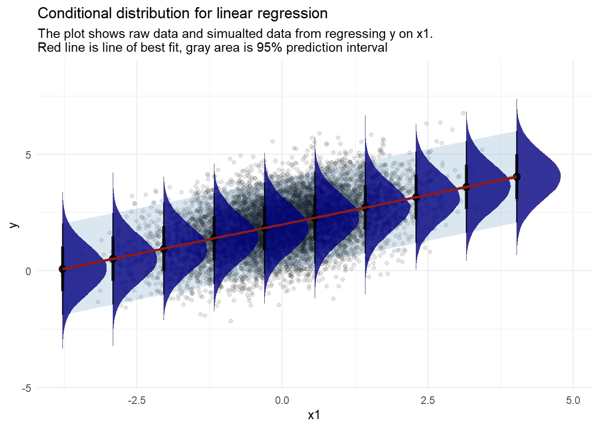

We will finally move to actually running statistical models with general linear models. We’ll see that a simple t-test and between-subjects anova are just linear models.
Prediction and inference
Regression analysis is often described in two ways. One of them talks about how to predict a value of variable of interest given a set of other variables. The other context focuses on inference: which variables are in fact related to a variable of interest. When doing inference you are interested in learning how the data was generated as a function of your variables of interest. In prediction you just want to be as accurate as possible. This is of course a bit simplistic and as you’ll see looking at predicitons can be very useful for actual inference but this explanation will do for now.
As an example imagine you work in a real estate agency selling houses. You track information on a number of characteristics of each house: their price, size, number of rooms, distance from city center and various facilities etc. You might be interested in predicting the price of a house as accurately as possible given all the characteristics of a house. You might also be interested in how various characteristics of a house relate to its price so as to know what to focus on (e.g. what to invest in).
Regression engine
The very idea of making a regression analysis is to reexpress the relations between variables so as to be able to express one of them as a combination of the other ones. How can we do that? We want a way that will approximate our variable of interest so that each time we are to say what value this variable will have we will make the best guess possible. But what does it mean ‘the best guess possible’? We need some rule on what it would mean to make a best guess. Since we are predicting a continuous variable we can calculate how much we miss for every prediction (subtract the actual value from the predicted value) and then choose the one that has the smallest error. This is already a start but we can miss in two ways: we can predict too little or too much. The first one is going to produce a negative error and the other one a positive one. Negative numbers are smaller than positive ones so our rule so far will always favor predicting too little! Fortunately there is a very easy way to deal with this - we can square the errors (there are reasons why squaring is preferred to taking absolute values but they are beyond the scope of this course). Now, we can sum all the squared errors for each observation in our dataset. The prediction that gets the smallest sum of squared errors wins! This is pretty much how the Ordinary Least Squares (OLS) regression works.
Lets start with the simplest example possible. Lets say we have no other information except our variable that we want to predict. Which value will minimize the sum of squared errors? There’s actually a fancy formula for this because OLS regression has a closed form but perhaps a better way to learn this is to actually make a bunch of guesses and see what happens. This is what simulation is perfect for.
Lets first simulate a bunch of observations from a normal distribution: our dependent variable. We will keep mean = 0 and standard deviation = 1.
library(tidyverse)
── Attaching core tidyverse packages ──────────────────────── tidyverse 2.0.0 ──
✔ dplyr 1.1.4 ✔ readr 2.1.5
✔ forcats 1.0.0 ✔ stringr 1.5.1
✔ ggplot2 3.5.1 ✔ tibble 3.2.1
✔ lubridate 1.9.3 ✔ tidyr 1.3.1
✔ purrr 1.0.2
── Conflicts ────────────────────────────────────────── tidyverse_conflicts() ──
✖ dplyr::filter() masks stats::filter()
✖ dplyr::lag() masks stats::lag()
ℹ Use the conflicted package (<http://conflicted.r-lib.org/>) to force all conflicts to become errors
y <-rnorm(1000)
Next, we’ll make a bunch of guesses in the range from -1 to 1 and see how each of them performs (what is their sum of squared errors).
sse <-c() #initialize vector to store sum of squared errorspred <-seq(-1,1,length.out =10) #we'll make 10 guesses from -1 to 1, equally spacedfor (i in pred) { res <-sum((i - y)^2) # for each guess calculate sum of squared errors sse <-c(sse, res) #append the sum to the vector}pred_sse <-data.frame(pred,sse) #put these
You can go ahead and inspect the sse and pred. Can you see for which guess we get the smallest error? You can also look at the animation below:
predictions and sums of squared errors
You can see that the points fall on a really nice parabola. For a guess of mean - 1 standard deviation we get a really big sum of squared errors, they gradually get smaller and smaller and then start to get bigger up to mean + 1 standard deviation. The lowest point of the parabola is at the mean and that is in fact our best guess. When making regression analysis we will be working with means all the time. We’ll just be adding more information to the model (e.g. if we add belonging to experimental vs control group into the model, then our best guess will be the mean in each of those groups and we get a two sample t-test). Linear models are all about conditional means i.e. means of one variable given a value of another variable.
A more general way which we can use to think about linear models is that we are modelling Y as following a normal distribution with mean \(\mu\) and variance \(\sigma\). The mean is then determined by the variables we put into the model (those are the conditional means from above). If we don’t add anything \(\mu\) is going to be the actual mean in our sample. If we start adding variables into the model then \(\mu_i\) will be determined by them (that’s why we have the i).
\[
Y_i \sim Normal(\mu_i, \sigma)
\]
\[
\mu_i =\alpha
\]
When we add predictors into the model we will be able to assess how much we can improve over just using the mean of the dependent variable (in fact this is what one of the most commons metrics for assessing linear models is - R squared).
Making a simple regression
Before we move on to running our first model we have to understand one more thing - formulas in R. They allow us to write models in a very succint form. A formula generally takes the form of y ~ x1 + x2 + .... On the left hand side is always the dependent variable and on the right hand side you put all of your predictors.
We’ll start with a simple simulated example to get an intuition on what exactly a simple linear model does. We will simulate some data, run a model and then plot the predictions against the data.
N <-1e4x1 <-rnorm(N)y <-rnorm(N, 2+ .5*x1)df1 <-data.frame(x1, y)
Lets run a simple linear model:
lm_sim <-lm(y ~ x1, df1)
Ok, now we can get to the plotting. What we will do is:
Plot the original data
Plot the regression line
Plot the conditional distributions implied by the model.
You can inspect the code if you want but it’s not that important right now
simulating data implied by the model
x1 <-seq(min(df1$x1), max(df1$x1), length.out =10)#set up a data frame to store simulated valuesdf_sim <-data.frame(x1 =numeric(), sim =numeric())#run loop for simulationfor(i in x1) {#simulate y for given x1 sim <-rnorm(1e5, mean = lm_sim$coefficients[[1]] + lm_sim$coefficients[[2]]*i, sd =1)#store x1 for given simulations x1_1 <-rep(i, 1e5)#store sim and x1 in temp temp <-data.frame(x1 = x1_1, sim = sim)#append simulated data to results data frame df_sim <-rbind(df_sim, temp)}#' the above is based on simulating data from the distributiondf_rib <-data.frame(x1 =numeric(), lb =numeric(), hb =numeric())for(i in x1) { q <-qnorm(c(.025, .975), mean = lm_sim$coefficients[[1]] + lm_sim$coefficients[[2]]*i, sd =1) temp <-data.frame(x1 = i, lb = q[1], hb = q[2]) df_rib <-rbind(df_rib, temp)}df_sim %>%ggplot(aes(x = x1, y = sim)) +geom_point(data = df1, aes(x = x1, y = y), alpha = .1) +geom_ribbon(data = df_rib, aes(x = x1, ymin = lb, ymax = hb, y = hb), alpha = .2, fill ="steelblue") + ggdist::stat_halfeye(alpha = .8, fill ="navyblue") +geom_smooth(data = df1, aes(x = x1, y = y), alpha = .4, method ="lm", color ="firebrick4", fill ="firebrick4") +labs(title ="Conditional distribution for linear regression",subtitle ="The plot shows raw data and simualted data from regressing y on x1.\nRed line is line of best fit, gray area is 95% prediction interval",y ="y") +theme_minimal()
`geom_smooth()` using formula = 'y ~ x'

The plot above is quite packed with information so lets unpack it. First, we have the datapoints plotted as a scatterplot. Next we have the red line which indicates the regression line or in other words the conditional means of y given x1. The we have the distributions which are data simulated from the model for 10 values of x1. Each distribution is what we would expect y to look like given a value of x1 based on our model. Notice that the mean of each distribution (the black dot) passes exactly through the red line. Next notice that each distribution has the same shape (pretty much a normal distribution - that is the normal distribution assumption) and more or less the same width (that is the homoscedacticity assumption. The light blue area indicates where we would expect 95% of the y to fall in for any given value of x1.
Now it’s time to introduce some data we can work on. We will be working with a dataset that stores information about
We can start with the null model - a model that has no predictors, just the intercept in it. As we already know this intercept will in fact be the sample mean. Intercept can be coded with 1:
null_model <-lm()
Lets add the first predictor to our model. The model will then look like this
\[
Y_i \sim Normal(\mu_i, \sigma)
\]
\[
\mu_i =\alpha + \beta_1 * x_1
\]
Running a regression in R is actually super simple. You can use the lm() function to do it.
simple_fit <-lm()
Now that we have our model lets proceed to interpret it. You can use the summary() function for that:
summary(simple_fit)
Lets look at the null model as well:
compare to the null model, explain R squared
Important note: lm() silently drops missing values!
A note on assumptions
A lot of psych statistic courses has an obsession with assumptions for statistical tests. You may have heard such terms as normality, independence or homoscedacticity. They sound very scary and often intimidate students into running all sorts of tests to check for those assumptions and state things like “oh no that test for normality was violated I cannot use a parametric test!”. Truth is you always make assumptions of some sorts (even of the sorts like “my measurement tools actually worked”) and there is no running away from them. Rather than blindly checking assumptions it is much better to actually understand how they impact your model - what is affected if one of the assumptions gets violated and can we do something to deal with it? Here is a great post on precisely this topic.
Categorical predictors
Simple OLS regression is actually quite flexible in what kinds of predictors it can use. You can easily include various categorical predictors into your linear model. The trick is to code them properly.
Remember that the regression coefficient from a linear model tells us what is the predicted difference in Y for 1 unit increase in x? We can use that to code categorical predictors. For those variables that have only 2 levels (e.g. control and experimental condition) you code one as 0 (this level is called the reference category) and the other as 1. Then a 1 unit increase in x is simply the shift from the category coded as 0 to the category coded as 1. Lets look at an example:
In case you were wondering, yes we just did a simple t test. We can compare the results to the output of t.test() function:
So far we had only 2 levels of our categorical predictor. However, often you have to work with variables that have multiple levels. In such case you can no longer code one level as 0 and the other as 1. There are a few ways in which you can deal with this. We’ll look at two: dummy coding and effect coding.
Dummy coding extends the logic of coding categorical variables as 0 and 1. We still have one level as reference category coded as 0. Other levels are coded as 1 but this time we need 1 variable for each of those levels. We end up with k-1 variables that take values of 0 or 1 where k is the number of levels that a variable has (these are called dummy variables). Each dummy variable is coded 1 if it takes the value of a corresponding level and 0 otherwise. We have k-1 dummy variables because we do not need a variable for the reference level. If all the dummy variables take the value of 0 then we know it has the value of the reference level. Each of the dummy variables is going to express the difference between the reference level and a given dummy level. Note that this coding itself does not allow to compare 2 dummy levels to each other (we’ll see how to do that later). Lets see this type of coding in action:
The other way to code a categorical variable is through effect coding. This type of coding will use intercept as the grand mean and each variable will reflect the difference between the grand mean and a given level. Not that again we have k-1 variables because the last comparison is just a function of the other ones.
Finally lets compare the results of our model to simple one-way anova: